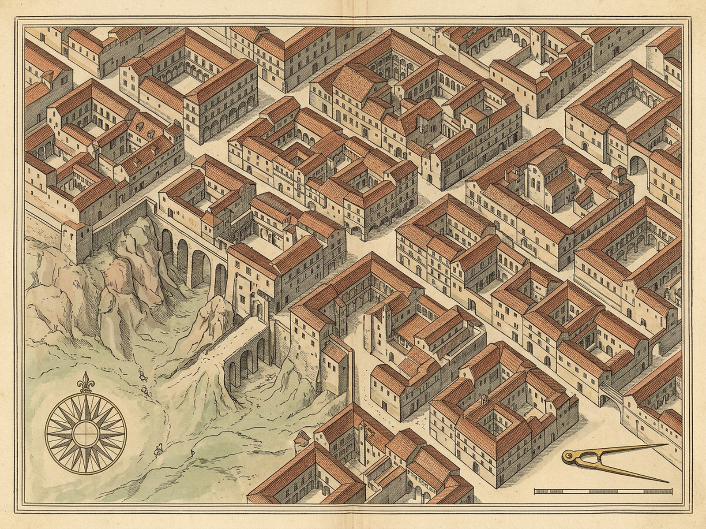
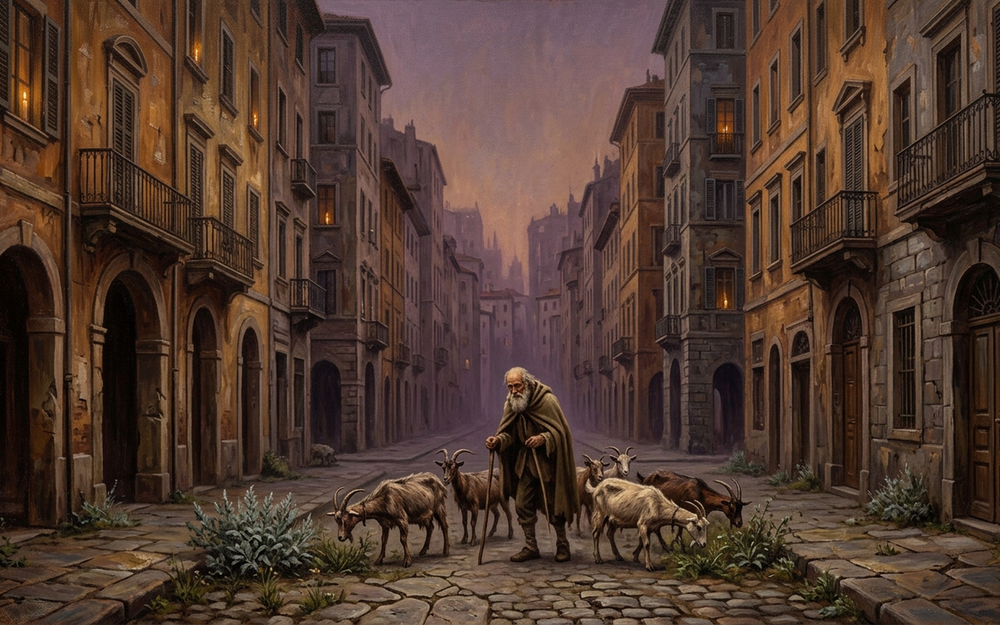

CECILIA
Named Pastures & Endless Streets
Era
Youth 15%
Outside
Open Pasture
Flock
Youth · 7 Goats
Sage
Open Meadow
B
X-Ray
M
Bells Off
R
Reset
P
Plates
Named Pastures & Stones
3 Pastures
[1] Meadow of the Low Sage
Open Turf
Salvia humilis · Warm fragrant hollow beyond south tollgate
[2] The Goat's Slope
Open Turf
Thymus & Cytisus · Steep limestone thyme and broom scree
[3] Crossroads of the Wind
Open Turf
Foeniculum & Stipa · Four-breeze feathergrass upland col
[4] Youth
[5] Gates
[6] Sprawl
[7] Paper
[8] Island
Era & Traffic Island
15%
0% Youthful
88% Threshold
100% Mingled
Y
Youth
E
Mingle All
D
Drive Flock Across Traffic Island
W
Crop Curb Wastepaper (0)
Barefoot Goatherd · Open Pastures
Ask me the name of any pasture and I know it; cities have no name—only leafless intervals between one field and the next.
Bell Compass & Exit Test
Gates Open
X
Attempt Exit Outward
North
East
South
West
Watchmen & toll-collectors guard the limestone gates; beyond them lie the open named pastures.
Meadow of the Low Sage
Warm hollow of fragrant silver-green Salvia humilis beyond the south tollgate, grazed by seven nimble horned goats.
1-3 Pastures · 4-8 Stones · D Island · W Paper · E/Y Era · X Exit · B X-Ray · M Bells · P Plates · R Reset
CECILIA ROYAL PLATES
Cartographic Survey & Traffic Island View
Z
1.8x Loupe Off
Esc
Close

Plate I · Cartographic Survey (1600x1200)
map.png

Plate II · Perspective View (1600x1000)
image.png